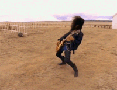
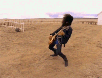

Guns N' Roses
Historia
Guns N' Roses es una banda estadounidense de hard rock formada en Hollywood en la zona de Sunset Strip, alrededor de Santa Mónica, en el área metropolitana de Los Ángeles, California en 1985. El grupo fue fundado por el vocalista Axl Rose y el guitarrista Izzy Stradlin. Es una de las bandas de rock más exitosas de todos los tiempos, habiendo vendido más de ciento cincuenta millones de discos, es considerada ícono global de la música y forma parte del prestigioso Salón de la Fama del Rock and Roll. Asimismo, la banda es uno de los números artísticos con más galardones, legado y repercusión mundial hasta la fecha. También Guns N' Roses es considerada una de las bandas más influyentes de la historia debido a su gran legado musical.
Estilo musical y evolución
La música de Guns N' Roses es una fusión de hard rock, blues rock, heavy metal y el clásico rock and roll.
Premios y reconocimientos
Desde 1989 hasta 1993 Guns N' Roses fue nominado por la American Music Awards, los Grammy Awards, los MTV Video Music Awards y los World Music Awards en 20 ocasiones, y ganaron 9 premios. El 14 de abril de 2012 ingresaron al Salón de la Fama del Rock.
Miembros
Axl Rose: voz, piano (1985-actualidad) Slash: guitarra principal (1985–1996, 2016-actualidad) Duff McKagan: bajo, coros (1985–1998, 2014, 2016-actualidad) Richard Fortus: guitarra rítmica (2002-actualidad) Izzy Stradlin: guitarra rítmica (1985-1991) Tracii Guns: guitarra solista (1985)
Discografía
Guns N' Roses poseen un catálogo oficial de 7 álbumes de estudio


 
